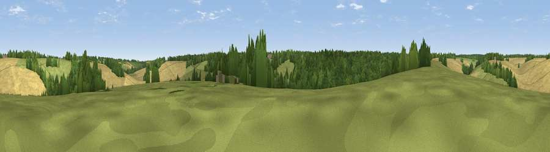

Viewpoint near Potten End
#44171 in England · top 82% of its area beats it · near Potten EndThe view, rendered

A 360° render of this exact spot computed from the terrain model, tree cover and land cover — summer colours, afternoon light, calibrated against photographs of famous viewpoints. Real trees, hedges and buildings will differ in detail.
The panorama
Grey silhouette: terrain skyline in each direction (720 bearings, Earth curvature and refraction included). Dashed green: skyline with trees (+15 m) and buildings (+8 m) as obstacles. Blue strip: how far the ground is visible on each bearing.
Where the view opens
Wedge length = distance to the farthest visible ground on that bearing (vegetation-aware). Rings at 10, 25 and 50 km.
What fills the view
37% cropland · 34% woodland · 28% grassland ·
Angular shares of the visible panorama (visual magnitude), not map area. Landscape diversity 0.49 (0–1 Shannon).
Key numbers
More beautiful places nearby
The staircase of upgrades: each row has a higher view potential than everything closer. Driving times are estimates from straight-line distance, calibrated against real road routing — check an actual route before setting out.
| Place | Direction | Drive | Score |
|---|---|---|---|
| Berkhamsted Hill | SW · 2 km | ~6 min | 26.9 |
| Viewpoint near Hudnall Common | N · 4 km | ~9 min | 27.2 |
| Viewpoint near Corner Hall | SE · 6 km | ~13 min | 34.5 |
| Viewpoint near Tring Station | WNW · 7 km | ~14 min | 46.9 |
| Viewpoint near Aldbury | NW · 7 km | ~15 min | 56.5 |
| Viewpoint near Tring Station | WNW · 8 km | ~16 min | 68.5 |
| Beacon Hill | NW · 9 km | ~17 min | 74.1 |
| Viewpoint near Halton | W · 13 km | ~24 min | 74.3 |
51.78145, -0.52680 · source: screening · position refined by local search. Computed location — check access rights before visiting.